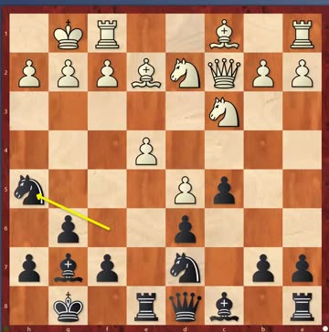
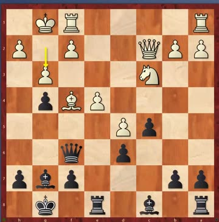
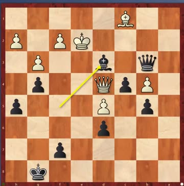

“Too relaxed before a game is as bad as too tense”
Two classes left this term — the last one lands the week of Thanksgiving. Coach opened with the thing he says most often, and it isn't about chess moves:
His arithmetic: basketball gets you three, four, five sessions a week. Chess gets one hour with him — “老师这一堂课太少了”, one class is far too little. The rest has to happen at home, and it can: the board is on the laptop.
He went through all six, and the playable boards now carry his answers rather than the engine's. Every first move he gave matched the line already stored — which is the second week running that has happened.
One child in the room got all six. He asked for hands and there was one — the same student who had just gone up 80 rating points in a week and crossed 1200, having only recently moved up into this class.
That is the whole of puzzle 73 in one sentence, and he added the part that matters: the showy move is only right if you have calculated it. Otherwise take the quiet one and sleep well — “你心里踏实”.
The new sheet, 79–84, is up as playable boards with the answers hidden — all six are Black to move again, and one of them is a mate in four.
A77 Modern Benoni · World Championship, game 3 · 16 July 1972 · Fischer had Black · 0–1
Last week ended on a cliff. Fischer had lost game 1 by taking a poisoned pawn, and Coach wouldn't say what happened next. This is what happened next.
Why he forfeited game 2. Fischer made four demands. Two were easy and the organisers agreed: an automatic car, and fresh oranges every day. Two they refused: no cameras and no audience. So he didn't turn up. The hall waited — ten minutes, twenty, thirty — and the crowd assumed he was just late again, the way he had been for game 1. He wasn't. He had already bought three tickets back to New York, for himself and the two people with him.
Half an hour in, the organisers caved and telephoned: no cameras, play in a side room. Fischer said fine — put the clock back to zero. They said no. He forfeited, and went 0–2 down without having lost a real fight.
And then he came back. Game 3 was played in a back room with no cameras; the moves were relayed to the audience next door, with a grandmaster explaining them. Spassky, meanwhile, had spent the free days playing tennis and fishing — he had beaten Fischer five times already and thought the man was more interested in arguing about conditions than in chess.
A new opening every single game. Behind Spassky sat a dozen Soviet grandmasters preparing lines; Fischer had one coach and no computer. His answer was to never play the same opening twice, so there was nothing to prepare against. Here, two points down with Black, he picked the sharpest thing he owns — the Modern Benoni.
▶ Live board. The whole game, read off Coach's own screen. Press ▶ and let it play.



The lesson inside the game. Fischer has the queenside pawn majority and wants to push it — but he doesn't push it yet. …b6 first, then …a6, and only then …b5.
18.g3 is where it goes wrong, and it looks like nothing. It freezes White's own kingside and hands Black the light squares — and White's remaining bishop is the dark-squared one, so it can never come back and defend them. Twenty moves later that is the whole game.
Fischer and his light-squared bishop. Coach noticed it out loud: Fischer hardly ever gives a bishop for a knight, and when he keeps one, it is almost always the light-squared one — White or Black, game after game.
Sealed, and never resumed. After 41…Bd3+ the game was adjourned. Spassky took it home, looked at it, and resigned without playing on: he loses the two connected passed pawns, or the bishop, or he gets mated. It was Fischer's first win over Spassky in his life, after five games without one — and from there the match was a different match.
Coach's other point, which isn't about chess. Spassky gave way again and again off the board, and it cost him on it. But without those concessions Fischer would have flown home and there would have been no match of the century at all.
Coach set one more piece of homework, and then said it was for when you're grown up, or whenever you have time: Fischer and Karpov never played their match, and it has bothered him ever since.
“这个是个课题” — he called it a research project, and said he would genuinely like to know the answer.
B21 Sicilian · 1.e4 c5 2.d4 cxd4 3.c3 · Black's side · a gambit a week, and this week it's the Sicilian one
A gambit every week. King's Gambit, Scotch Gambit, Halloween Gambit last week — “感恩节 Gambit 肯定有，还有圣诞节 Gambit”, there's bound to be a Thanksgiving one and a Christmas one too. This week: White throws the d-pawn and the c-pawn at you on move three.
But first, why play the Sicilian at all. Coach's real message was about not getting stuck in one opening for life:
He ran through what's inside the Sicilian — the Dragon, the Najdorf (Fischer's), the Scheveningen (Kasparov's, for thirty years) — and mentioned a grandmaster's book called The Sicilian Labyrinth, named for exactly how complicated it is. While you're young, he said, try all of them and then pick.
▶ Live board. Take the pawn, and here's the setup to aim for:
Steinitz's rule, which Coach quoted: the best way to answer a gambit is to accept it. Then know what's coming — White's pieces go to the same squares every time: Nf3, Bc4, Bf4, Qe2, Rd1, and then e5.
▶ Live board. The trap he wants you to never fall into — and the one move that deletes it:
Play …e6 before …Nf6. With the pawn on e6 the bishop on c4 is biting on granite and the whole trap stops existing. Coach's description of what that does to the person playing White is the best line in the lesson:
Then …a6, to stop Nb5 and get ready for …b5 yourself. If you'd rather keep it simple there's also …Bb4 and castle — solid, and the computer is happy with Black a pawn up.
▶ Live board. And if you don't want the pawn at all:
The verdict. Unclear — White is a pawn down with more space and faster pieces, Black is a pawn up with no weaknesses. “两个人都可以下”: both sides can play it.